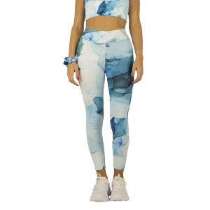

Tipos e variantes
T-shirts e polos
Compare corte, gola, mangas e superfície. Malha é uma construção com laçadas, não o nome de uma fibra. ↗
Aspetos que distinguem as opções: Composição, estrutura, gramagem, transparência e medidas.
Contexto possível: Eventos, equipas e uso diário.
Sweatshirts e casacos
Compare camadas, forro, punhos e fechos; uma face não descreve o conjunto.
Aspetos que distinguem as opções: Espessura, ajuste com outras peças e acesso à zona da marca.
Contexto possível: Sobreposição e contextos com necessidades de abrigo.
Bonés e acessórios
Observe painéis, costuras e ajuste; o desenho deve caber numa zona acessível.
Aspetos que distinguem as opções: Forma dos painéis, ajuste e posição das costuras.
Contexto possível: Identificação de equipas e uso recorrente.
Roupa de trabalho e de desporto
Uma peça de identificação de equipa e uma peça destinada a uma tarefa física podem exigir cortes e movimentos diferentes. Faça a prova com os gestos e as camadas de roupa previstos; roupa de trabalho não equivale automaticamente a equipamento de proteção.
Aspetos que distinguem as opções: Liberdade de movimentos, bolsos, fechos e posição da mensagem durante a atividade.
Contexto possível: Equipas, tarefas profissionais e prática recreativa.
Chapéus, cachecóis e outros acessórios
A forma de vestir e ajustar pode deixar a área personalizada dobrada ou parcialmente escondida. Observe o artigo colocado, em vez de medir apenas a peça estendida.
Aspetos que distinguem as opções: Ajuste, costuras, contacto com a pele e leitura na posição de uso.
Contexto possível: Complemento de vestuário e identificação de grupos.
Usos e contextos
- Para grupos, recolha medidas e escolha o corte antes dos tamanhos; as letras não substituem a tabela da peça.
- Para uso repetido, considere lavagem, conforto e manutenção da marca.
O que comparar
- Gramagem é massa por área, habitualmente expressa em g/m², e difere de espessura. O âmbito do ensaio ASTM D3776 é a massa por unidade de área do tecido. ↗
- Compare peito, comprimento e manga na tabela da peça; observe o corte numa amostra.
- Examine costuras e remates, e o comportamento após o cuidado previsto quando este for decisivo.
- Composição identifica fibras; construção descreve como se organiza o tecido; corte define a forma da peça. Registe estes três aspetos separadamente.
- Os cuidados indicados na etiqueta abrangem tratamentos distintos. Uma temperatura de passagem a ferro não deve ser deduzida apenas da fibra. ↗

Materiais e componentes
São possibilidades a identificar no artigo escolhido. Confirme a composição de cada parte; os materiais de uma variante não descrevem toda a família.
Tecido exterior
algodão · poliéster · misturas de fibras
Separar composição, estrutura e acabamento; confirmar percentagens da variante.
Forro, punhos e painéis
materiais têxteis
Identificar cada parte; a composição do exterior não descreve todos os acessórios.
Zonas de personalização
- Peito, costas ou manga: Medir no tamanho escolhido; verificar bolsos, costuras e proporção nos diferentes tamanhos.
- Painel de boné: Confirmar curvatura, costuras e acesso ao verso.

Técnicas e condições
Possibilidades gerais para comparar. A aplicação depende do artigo, da superfície, do desenho e das condições do processo; não está confirmada para um artigo específico.
Serigrafia
Avaliar fibras, acabamento, cor, tinta e cura.
Bordado
A referência de bordado relaciona o resultado com tecido, estabilização e densidade de pontos; confirmar desenho e suporte. ↗
Transfers
Escolher a modalidade após conhecer composição, acabamento, aplicação de calor e cuidados.
Limitações e cuidados
- Mais gramagem não prova, por si só, conforto ou durabilidade superiores.
- Não deduza encolhimento, resistência da cor ou proteção contra intempéries sem documentação ou ensaio.
- A GINETEX explica os tratamentos de lavagem, secagem, passagem a ferro e cuidado profissional indicados na etiqueta. Siga os cuidados da peça e da personalização. ↗
Antes de decidir
- Que uso e lavagem estão previstos?
- Qual é a composição de cada parte?
- Que tabela de medidas corresponde ao corte?
- A arte foi medida nos tamanhos relevantes?
Perguntas frequentes
Algodão e malha são a mesma coisa?
Não. Algodão é uma fibra; malha descreve uma construção do tecido. Identifique ambos.
Mais gramagem significa sempre melhor peça?
Não. Compare construção, corte, conforto, acabamento e adequação ao uso.
O mesmo desenho serve para todos os tamanhos?
A presença visual e a área podem mudar. Reveja posição e dimensões nos tamanhos usados.
Fontes e âmbito
As referências sustentam os factos identificados no texto. Os tipos, contextos e critérios de escolha são orientação editorial; as instruções de um fabricante aplicam-se ao seu próprio âmbito.
-
Estruturas de malha
Documentação técnica de referência · Consulta:Estrutura de malha e diferenças de construção; não comprova desempenho de uma peça.
-
D3776 — Standard Test Methods for Mass Per Unit Area (Weight) of Fabric
ASTM International · Consulta:Título e resumo público do ensaio de massa por área; não foram usados procedimentos do texto integral.
-
Bordado — suporte e estabilização
Documentação técnica de referência · Consulta:Influência do suporte, estabilizador, agulha e densidade de pontos.
-
Care Labelling Symbols
GINETEX · Consulta:Significado das instruções de cuidado; os símbolos não são reproduzidos.